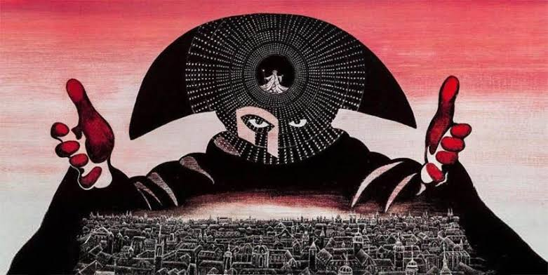

Oratorio, Mass and Requiem
Oratorios such as Haydn’s The Creation and masses such as Mozart’s *Mass in C minor* continue to be composed. A specific type of mass is the requiem, or mass for the dead, a genre immortalised in the Classical period by Mozart’s magnificent Requiem in D minor.

| In the film Amadeus (1984), we are given a detailed insight into the life and work of W.A. Mozart. However, the film contains many historical inaccuracies, such as the rivalry between Mozart and Salieri, or the claim that Salieri tricked him into composing the *Requiem* that you are about to hear. |
WE LISTEN AND WE DON'T JUDGE: ORATORIOS & MASSES
🎧 Listening 2
Listen carefully to the following musical excerpt from Haydn’s The Creation and answer the following questions
Haydn – The Creation – “They are already fading away in the sacred rays...”
- What did an oratorio consist of? Try to remember the Baroque ones.
- When the work was performed, would there have been sets, costumes or performances?
🎧 Listening 3
You are now going to listen to the ‘Dies Irae’ from Mozart’s Requiem Mass. Answer the following questions.
Mozart – Requiem in D minor – Dies Irae
a) What emotion does the play evoke in you?
b) What does ‘Dies Irae’ mean? At what other points in history have we come across this term?